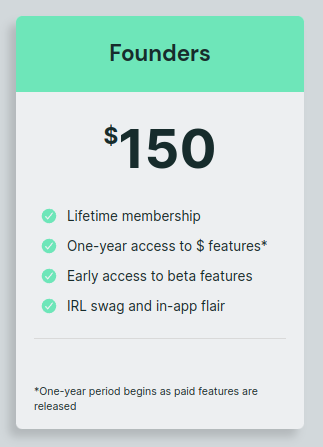

PyScript - the JavaScript library that lets you write Python right inside your HTML - is deliberately easy to use. Include a <script> tag, optionally a <link type="css"> for styling, and you can start dropping Python into your page. Easy.
But what about all the other parts of Putting Stuff on the Web that are harder? What if you want to host your page with PyScript somewhere? Or share it with a friend, colleague, or teacher? What if you've never installed an IDE before? Your experience of could be made so much better with some additional hand holding.
That's where PyScript.com comes in. Announced today by Anaconda, this free hosted offering is aimed at making it easier for anyone to write, publish, and share their Python/PyScript code. Let's take a look at the layout, features, and possibilites of PyScript.com.
When you first go to PyScript.com and log in, you'll see your projects laid out as a grid of cards. These are your PyScript Projects, sets of related documents that consititute a single working unit (html, python, css, and js files most likely). Below each are two buttons: Edit and . View Site . "Edit" will take you to the Project View for your project; "View Site" will take you to the PyScriptApps.com view of your project. Both are described below.

Additionally, the Dashboard view has some basic controls at the top. You can create a new project, which by default will be given a cute-but-meaningless name. You can also change the page's color theme to light or dark. Clicking on the avatar symbol in the upper right presents options for opening a support or abuse ticket as well.
So far, so standard. Let's get into the meat and potatoes - the Project view.
Each project has an editor view, split into three separate panes: the file explorer, the editor, and the preview, as well as some addition controls Let's look at each of these parts individually:

The file explorer shows a list of hosted on the PyScript.com servers for this particular project. The files can be of most (any?) type, and adding on with a common suffix like .html , .py , .toml , or .png will give them a matching adorable icon. New files can be created with the New File button, and the whole panel can be hidden to the side with the Hide Sidebar X button. Currently, I don't believe there's an option to upload a file directly through the UI.
It's worth emphasizing that these are the files that are present on the PyScript.com servers, not the contents of the Emscripten Virtual Filesystem in which Python operates. For example, if you've created a file called data.txt in the File Explorer, you can read from it in Python by doing:
index.html
{{< highlight "html" "linenostart=1">}}This is just the simplest possible example - there is lots of addition flexibility provided by PyScript's fetch configurations for where the files end up in the Virtual Filesystem.
The center pane of the Project View is the Editor, a fully-function IDE-like environment with auto-completion, intellisense and more, provided under the hood by the CodeMirror project. Here users can write or edit their code directly in the browser window.
To be frank, I'm not sure what more there is to say about the editor - it's where you edit code! The really neat thing is what happens on the right hand side of the page.
With focus anywhere on the page, users can hit Ctrl+s (⌘+s on Mac) to save their code. But what's really neat is that you can hit Ctrl+Enter (⌘+Enter on Mac) or click the button in the upper-right to run your code.
When you "run" your code, the contents of your index.html file are loaded as the source of an iframe embedded into the right-hand side of the editor display. Since the iframe is served from the same domain as the file explorer contents, any files that are visible in the file explorer are available to your page, live, in the preview. You essentially get an in-the-page view of what your index.html page would look like if it were deployed as its own website. And it refreshes every time you hit run.
It's worth nothing - this preview functions almost exactly like if they were a standalone webpage, but because the page is inside an iframe inside the window, a few specific things will be different. Access to some objects which are global to a page, like LocalStorage, may have different access limitations inside an iframe than inside a vanilla window. I know the PyScript.com team has been working through these differences and trying to minimize them - if you discover things that you can do with PyScript in a normal page that don't work in the preview pane, I'd encourage you to let the PyScript.com team know!
So you've developed your page entirely within the browser - what about viewing it as an actual page, or sharing it with others? This, I think, is the real secret-sauce of PyScript.com - any project is instantly shareable.
From either the Dashboard or the Project Page, click on the
View Site button (it's in the three dots menu in the Project view). A new browser tab will open to a page at PyScriptApps.com, and the latest version of your index.html file will be loaded. Share this link anywhere, and anyone can view your site live. Email it, text it, tweet it, jot it on a napkin - this is a real website that's publicly viewable, with your HTML/Python/PyScript code running.
This sharability is what really sold me on the PyScript.com idea. I was working through a project with one of the other PyScript Open Source folks, and he said "Oh let me just send you my site." He pinged me a link to the PyScriptApps.com version of his project, I clicked it, and BAM - his whole project, live on the web, super easy, and free. Not that this is the first-such shareable dev environment - replit, CodePen and others have of course had the same idea that putting development on the Web makes it that much more accessible. What PyScript.com brings to the table, I think, is that with PyScript running in the browser, the development process and code execution can also take place in the browser, and additional docs and resources for PyScript specifically can be brought in right next to the development environment. Additionally, the power of the Pyodide runtime to interact with the DOM/page/events is now made even more accessible to end users.
What's more, you'll notice that each page has a View Code button overlaid at the bottom. Clicking this brings users to a copy of the sites code, in their own PyScript.com panel, ready to be tweaked, edited, and played with. The goal of PyScript.com is make coding more accessible, so it only makes sense that end users can see how the sausage is made.
If you're excited about PyScript.com and the possibilities it brings to the table for getting started with Python, you may want to join as a Founder. For a one-time price of $150, you get in on the ground floor of PyScript.com development, including early access to beta features, a badge in the app (and potentially physical merch?), and a year of access to the sites paid features (to be announced soon).
What's more, I can imagine that the folks on the PyScript.com team would pay particular attention to folks who signaled their strong interest by becoming a Founder, and it's an opportunity to shape what PyScript.com is and will become.
One question I asked when I first learned about PyScript.com (PSDC) is - what does this mean for PyScript as an open source project ? As you can tell from the proliferation of PyScript-centric posts here, I'm just a wee bit invested in the software as an open-source concern. Again, I must stress here that I'm not an Anaconda employee, though I talk with the folks there on both the PyScript Open Source and the PyScript.com team quite a bit. Everything I'm sharing here is my personal perception from conversations with folks on and off the PSDC team, and you shouldn't read any of it to be the official position or intention of Anaconda or its employees. I'm just a guy who got involved on the Open Source side.
From conversations with some of the PyScript.com team, I've been struck by how conscientious they are of wanting to maintain the universality of PyScript as an open source project. There's been no expressed desire to add features to PyScript Open Source that would preference the use of PyScript.com over any other implementation of a similar idea, or of steering the project in specific ways that would benefit PSDC. PyScript.com is consistently talked about as yet another way to get people started with Python right now, and make coders' work shareable and viewable without installing anything.
What's more, it sounds like there isn't very much internal overlap internal between the Open Source and PSDC teams inside Anaconda itself. The former is focused on creating a powerful Open Source library to let users easily write Python into their web apps; the later is creating services and tools that surround that library, to lower that barrier to entry even further.
I'm excited to see where both PyScript Open Source and PyScript.com go next!